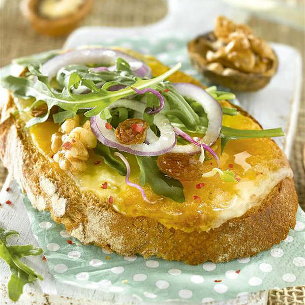

Tostada con queso, rúcula y nueces
Lleva una base de queso y, encima, rúcula, cebolla, pasas y nueces.
Y para darle un toque más dulce y sofisticado, le añadimos por encima un poco de mermelada.
Ingredientes:
- Queso untable
- Rúcula
- Cebolla
- Pasas
- Nueces
- Mermelada